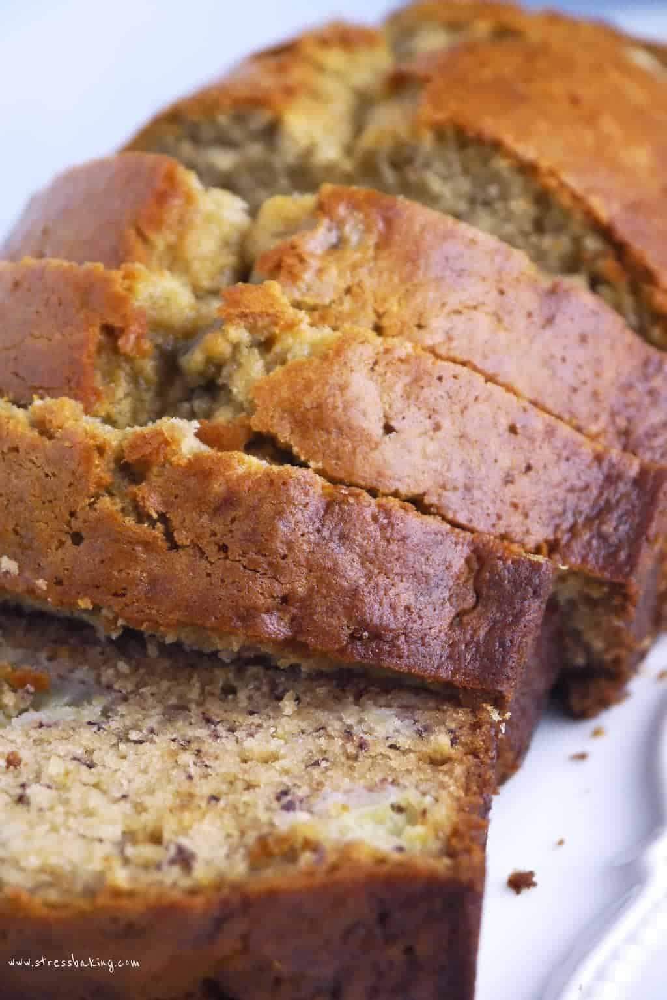

Bread Recipe

Description
Simply the most moist banana bread recipe you will find across the entire web fr... make this for your girl and her mom... you're welcome
Ingredients
- 3-4 OD ripe bananas, peeled and mashed to your liking
- 1/3 cup of butter, salted or unsalted
- 1 pinch of salt, or a few idk
- 1/2 teaspoon of baking soda
- 1 cup of BROWN sugar
- 1 large egg (this could be brown too)
- 1 teaspoon vanilla extract
- 1.5 cups of all-purpose flour
- love
Steps
- Preheat the oven to 350 F, add butter to 8 x 4-inch pan.
- In a mixing bowl, mash bananas with a fork and stir in melted butter.
- Begin to mix in baking soda and sugar, then introduce beaten eggs, salt and vanilla extract. Finally add flour.
- Pour batter into pan, bake for 55-60 minutes. Make sure to start checking on bread around 45 minute mark.
- Remove pan from oven. Let cool for several minutes. Serve.